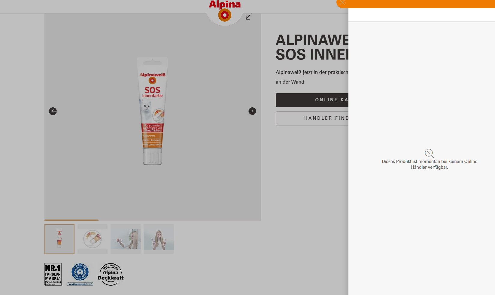

Sichtbarkeitsindex
2,849−9,8 % zum Vorjahr+7,0 % gegenüber 2024 und +51,9 % gegenüber 2023.
alpina-farben.de besitzt ein belastbares organisches Fundament. Die nächste Entwicklungsstufe verbindet SEO-Signalqualität mit hochwertigem Product Content, strukturierter Verfügbarkeit und einer überzeugenden digitalen Kaufstrecke.
Sichtbarkeitsindex
2,849−9,8 % zum Vorjahr+7,0 % gegenüber 2024 und +51,9 % gegenüber 2023.
Ranking Keywords
27.345Aktueller erweiterter Domain-Bestand im deutschen Index.
Top-10 Keywords
18.887−8,4 % zum VorjahrBreite Erstseitenpräsenz mit zusätzlichem Potenzial.
Traffic-Potenzial
≈ 356 Tsd.SISTRIX-Schätzung; 31,4 % entfallen auf /artikel/.
01 · Management Summary
Alpina hält seine Sichtbarkeit auf einem guten Niveau. Zusätzliche Wirkung ist vor allem durch breitere Themenabdeckung, klar gebündelte Signale, die Aktivierung vorhandener Page-2-Potenziale und eine weiterentwickelte Online-Kaufstrecke möglich.
24-Monats-Verlauf
Quelle: SISTRIX, Google Deutschland / Mobile, Datenstand 31.08.2026.
Strategische Diagnose
Stabile Domainbasis: Im direkten Herstellervergleich verfügt Alpina über eine sehr gute Ausgangsposition.
Potenzial bei der Ranking-Breite: Longtail und Ranking-Set entwickeln sich zurückhaltender als die Sichtbarkeit.
Potenzial bei der Signalbündelung: PDF-, URL- und interne Relevanzsignale können konsequenter zusammengeführt werden.
Potenzial in der Kaufstrecke: Verfügbarkeit und Produktnutzen könnten entlang der Händlerstrecke noch hilfreicher vermittelt werden.
Stärken
Alpina liegt im direkten Herstellervergleich vor Caparol, MissPompadour und Schöner Wohnen Farbe.
Der /artikel/-Bereich steht für 31,4 % des geschätzten organischen Klickpotenzials.
Position 1 u. a. für „Wandfarben“, „Wandfarbe blau“, „Wandfarbe Küche“ und zentrale Brandbegriffe.
Entwicklungsfelder
Die Sichtbarkeit bleibt deutlich stabiler als die Keyword-Anzahl. Ein GSC-Abgleich sollte Longtail-Veränderungen und Datenbasisänderungen unterscheiden.
Die Kernrankings bleiben robust; bei der erweiterten Themenabdeckung besteht zusätzliches Potenzial.
Eine einheitliche Zielstruktur kann die vorhandene Autorität noch effizienter zusammenführen.
02 · Rankings & Content
Keywords knapp außerhalb der ersten Ergebnisseite bieten mit der vorhandenen Domainautorität einen besonders effizienten Ausgangspunkt für zusätzliche organische Reichweite.
Ranking-Verteilung
SISTRIX Ranking Distribution, Datenstand 31.08.2026.
Traffic-Architektur
Jeder starke Artikel profitiert von einem klaren nächsten Schritt zu Produkt, Projektfinder, Farbraum-App oder Händler.
| Keyword | Position | Potenzial | Wettbewerb | Typ | URL |
|---|---|---|---|---|---|
| weiß | #17 | +100 | 66/100 | Content | öffnen ↗ |
| rot | #13 | +45 | 67/100 | Content | öffnen ↗ |
| komplementärfarben | #14 | +42 | 61/100 | Content | öffnen ↗ |
| alpina feine farben | #11 | +31 | 54/100 | Kannibalisierung | öffnen ↗ |
| grundfarben | #11 | +19 | 57/100 | Quick Win | öffnen ↗ |
| flieder farbe | #11 | +13 | 50/100 | Quick Win | öffnen ↗ |
| schimmel entfernen wand | #14 | +12 | 51/100 | Content | öffnen ↗ |
| altrosa | #18 | +11 | 57/100 | Produkt | öffnen ↗ |
| farbe beige | #12 | +9 | 49/100 | Quick Win | öffnen ↗ |
| türen streichen | #11 | +9 | 48/100 | Quick Win | öffnen ↗ |
| farbe für badezimmer | #11 | +9 | 36/100 | Quick Win | öffnen ↗ |
03 · Wettbewerb
Retailer wie OBI und Hornbach sind aufgrund ihrer Sortimentsbreite keine faire 1:1-Benchmark. Entscheidend ist die Position innerhalb der thematisch vergleichbaren Hersteller- und D2C-Gruppe.
Sichtbarkeitsindex
SISTRIX, Google Deutschland / Mobile, 31.08.2026.
Einordnung
MissPompadour kann bei transaktionalen Suchintentionen durch D2C-Nähe ein relevanterer Wettbewerber sein, als der Gesamtindex allein vermuten lässt.
04 · Structured Data & Digital Shelf
Besonders viel Potenzial liegt in der Verbindung der starken Markenbekanntheit mit einer nutzenorientierten, emotionaleren und kanalübergreifend konsistenten Kaufstrecke.

Potenzial in der Weiterleitung
Maschinenlesbare Produktdaten ergänzen: Product-/Offer-Markup kann Verfügbarkeit, Marke, GTIN und Händlerangebote bündeln.
Nächste Schritte anbieten: Lokale Händler, Alternativprodukte oder Benachrichtigung geben Orientierung.
Markenerlebnis fortführen: Eine ergänzte Händlerlogik führt die Customer Journey bis zum nächsten sinnvollen Schritt.
Data
Product + Offer/AggregateOffer, availability, GTIN, brand, image, SKU, color und ggf. review.
WirkungVerbesserte Maschinenlesbarkeit für Google, Merchant-Flächen und KI-Systeme.Content
Technische Angaben um konkrete Vorteile ergänzen: weniger Arbeitsgänge, schneller fertig, weniger Spritzer, leichteres Ausbessern.
WirkungDie zentrale Kundenfrage wird beantwortet: Warum erleichtert dieses Produkt mein Projekt?Image
Packshots durch Vorher/Nachher, Anwendung, Oberflächenwirkung, Raumkontext und relevante Details ergänzen.
WirkungMehr Kaufklarheit und zusätzliche Sicherheit vor der Kaufentscheidung.USP
Visuelle Proof-Points je SKU: Anwendung, Deckkraft, Reichweite, Werkzeug und Zeitersparnis.
WirkungEin möglicher Conversion-Uplift sollte kanal- und SKU-spezifisch per A/B-Test belegt werden.Hersteller-Perspektive
05 · Technik & Autorität
Die Domain verfügt über eine grundsätzlich tragfähige technische Basis. Zusätzlicher Nutzen entsteht durch konsequente Konsolidierung und einen klar geregelten Umgang mit historischen URLs, PDFs und indexierbaren Dateipfaden.
Backlinkziele verteilen sich auf http/https, www/non-www, /home sowie Slash-/Non-Slash-Varianten.
Empfehlung301-Matrix, Self-Canonicals, interne Links und XML-Sitemap auf eine URL-Norm vereinheitlichen.Eine Broschüren-PDF erhält für „alpina feine farben“ Sichtbarkeit neben der primären Kollektion.
EmpfehlungHTML-Priorität durch interne Links, PDF-Metadaten und Download-Architektur stärken.Starke Zielvarianten bündeln zahlreiche Links auf historischen Hosts. Ein auffälliger Anchor verweist auf ein mögliches PBN-Muster.
EmpfehlungRedirect-Ziele prüfen und auffällige Muster beobachten./fileadmin/ erzeugt Reichweite. Einzelne PDFs und Assets könnten parallel zu HTML-Seiten sichtbar werden.
EmpfehlungWertvolle Datenblätter erhalten und Überschneidungen gezielt prüfen.Rahmen der Analyse
In der verbundenen SISTRIX-Umgebung ist aktuell kein Alpina Optimizer-Crawlprojekt vorhanden. Core Web Vitals, Statuscodes, Meta-Duplikate, interne Linktiefe, hreflang und Crawlhinweise sollten ergänzend verifiziert werden.
06 · Priorisierte Roadmap
Erst Messung und Signalqualität, dann bestehende Rankings und Produktdaten aktivieren, anschließend neue Themenflächen und Händlerkanäle skalieren.
0–30 Tage
31–60 Tage
61–90 Tage